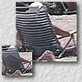

 Practical Super-Resolution from Dynamic Video Sequences
, and ,
in Proceedings of IEEE Computer Vision and Pattern Recognition (CVPR 2003), Madison, Wisconsin, USA, June 2003, to appear.
Abstract
- This paper introduces a practical approach for super-resolution, the process of reconstructing a high-resolution image from the low-resolution input ones. The emphasis of our work is to super-resolve frames from dynamic video sequences which may contain significant object occlusion or scene changes. As the quality of super-resolved images highly relies on the correctness of image alignment between consecutive frames, we employ the robust optical flow method to accurately estimate motion between the image pair. An efficient and reliable scheme is designed to detect and discard incorrect matchings which may degrade the output quality. We also introduce the usage of elliptical weighted average (EWA) filter to model the spatially-variant point spread function (PSF) of acquisition system in order to improve accuracy of the model. A number of complex and dynamic video sequences are tested to demonstrate the applicability and reliability of our algorithm.
Download Paper
- Acrobat: superes.pdf (3.9MB)